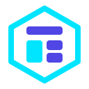
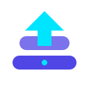
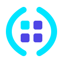
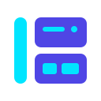
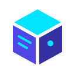
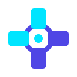

1. The Hex-Cortex
Cybernetic / ShieldAn outer hexagonal exocortex bracket holding a structured 3-part cockpit deck. Evokes augmented intelligence, protection, and modular cards.

2. The XD Monogram
Command & BrandDirect fusion of the letters 'X' and 'D' (reflecting the xd executable and ExoDeck name) with an embedded modular card core.
3. The Cyberdeck
Launchpad / ConsoleLayered horizontal command trays with an ascending forward apex arrow. Symbolizes starting up your daily cockpit and launching into web navigation.

4. The Orbital Core
Symmetrical & BoldDual circular Exo-brackets framing a 2x2 modular matrix (representing grid links, notes, whiteboard, and diagrams). Exceptionally sharp at 16px.

5. The Stepped Grid
StartGRD EvolutionA modernized evolution of StartGRD: cyan sidebar spine on the left + stacked indigo modular cards with data slots on the right.

6. The Neural Vault
Security & ShieldA stylized master password vault with an electric cyan shackle arch and cognitive keyhole core. Emphasizes privacy, AES-GCM encryption, and sovereignty.
7. The Prism Cube
3D Modular BlockAn isometric 3D floating knowledge block. Top launch deck in cyan with indigo side facets for notes and whiteboards. High-tech developer tool vibe.

8. The Pulse Chevron
Flight Radar & SpeedDual forward-pointing chevrons (>>) representing flight direction and quick browser navigation. Razor sharp silhouette that stands out on any taskbar.
9. The Synapse Cross
4 Media ConvergenceFour modular card nodes converging on a central pulse gateway. Directly symbolizes the 4 core page types: Grid, Markdown, Whiteboard, and BPMN.

10. The Card Cascade
Tactile Deck & NotesThree overlapping, fanned modular cards with title bars and note lines. Evokes tactile card decks, sliding note drawers, and organized workspaces.